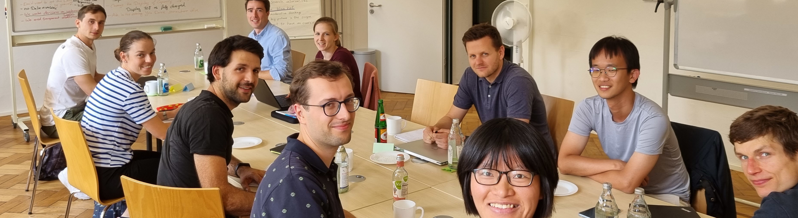

UpGrade Mobility
Principal Investigators
Principal Investigators
The principal investigators of UpGrade Mobility are professors of the KIT Mobility Systems Center. They supervise the doctoral researchers of the graduate school and contribute their expertise from different disciplines of mobility research.
Prof. Dr.-Ing. Eric Sax
Scientific Speaker
ITIV
eric.sax@kit.eduExpertise
- Systems engineering of embedded electronic systems
- Hardware-in-the-loop testing of driver assistance systems
- Secure software architectures and E/E topologies
Prof. Dr.-Ing. Martin Cichon
FAST
martin.cichon@kit.eduExpertise
- Rail system technology
- Rail vehicle energy supply and inductive power transfer
- Automation and robust systems for rail vehicles
Prof. Dr.-Ing. Tobias Düser
IPEK
tobias.dueser@kit.eduExpertise
- Validation-driven product development
- X-in-the-loop validation of systems of systems
- Virtual validation of highly automated vehicles
Prof. Dr.-Ing. Jürgen Fleischer
wbk
juergen.fleischer@kit.eduExpertise
- Mechatronic components for machine tools and handling systems
- Automated production of lightweight structures
- Production automation for Li-ion batteries and electric motors
Prof. Dr.-Ing. Gisela Lanza
wbk
gisela.lanza@kit.eduExpertise
- Global production strategies
- Production system planning
- Quality assurance
Prof. Dr. Kay Mitusch
ECON
kay.mitusch@kit.eduExpertise
- Transport policy, especially railway policy
- Regulation of network sectors
- Decarbonisation and resilience of transport systems
Prof. Dr. Ralf Reussner
KASTEL
ralf.reussner@kit.eduExpertise
- Software engineering
- Software design and quality
- Dependability of software-intensive systems
Prof. Dr.-Ing. Peter Vortisch
IfV
peter.vortisch@kit.eduExpertise
- Traffic modelling and microscopic traffic flow simulation
- Behaviour modelling and empirical mobility research
- Traffic engineering and management (ITS)
Prof. Dr.-Ing. Marius Zöllner
AIFB
marius.zoellner@kit.eduExpertise
- Applied technical-cognitive systems
- Autonomous driving
- Software-defined vehicles